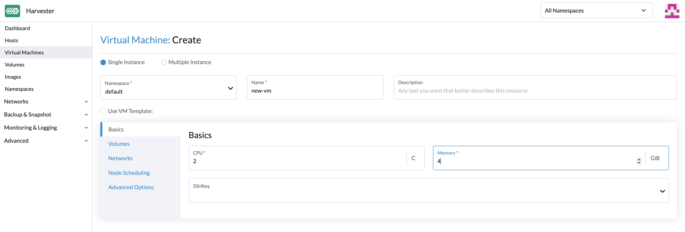
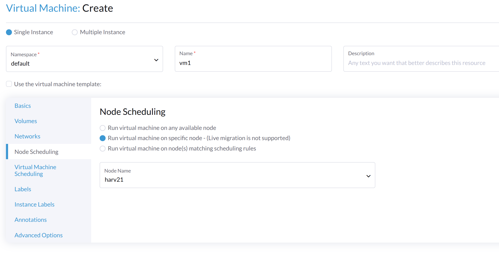

Criar uma Máquina Virtual
Como criar uma Máquina Virtual
-
UI
-
API
-
Terraform
Você pode criar uma ou mais máquinas virtuais a partir da página Máquinas Virtuais.
|
Por favor, consulte esta página para criar máquinas virtuais Windows. |
-
Escolha a opção para criar uma ou várias instâncias de máquinas virtuais.
-
Selecione o namespace de suas máquinas virtuais, apenas o namespace
harvester-publicé visível para todos os usuários. -
O Nome da VM é um campo obrigatório.
-
(Opcional) O modelo da VM é opcional; você pode escolher
iso-image,raw-imageouwindows-iso-imagepara acelerar a criação da instância da máquina virtual. -
Na aba Básico, configure as seguintes configurações:
-
CPU e Memória: Você pode alocar um máximo de 254 vCPUs. Como uma boa prática, assegure-se de que o número de vCPUs alocadas a cada máquina virtual não exceda o número de threads de processador físico disponíveis no host. Se não se espera que as máquinas virtuais consumam totalmente os recursos alocados na maior parte do tempo, você pode usar a configuração
overcommit-configpara otimizar a alocação de recursos físicos. -
Chave SSH: Selecione chaves SSH ou faça o upload de novas chaves.
-
-
Selecione uma imagem de VM personalizada na aba Volumes. O disco padrão será o disco raiz. Você pode adicionar mais discos à máquina virtual.
-
Para configurar redes, vá para a aba Redes.
-
A Rede de Gerenciamento é adicionada por padrão, você pode removê-la se a rede VLAN estiver configurada.
-
Você também pode adicionar redes adicionais às máquinas virtuais usando redes VLAN. Você pode configurar as redes VLAN na aba Redes Avançadas → primeiro.
Se a máquina virtual tiver uma interface conectada à rede
mgmte outra conectada a uma rede VLAN, o nó pode não conseguir acessar o endereço IPmgmtda máquina virtual. Esse problema de conexão ocorre quando o gateway da outra rede substitui a rota padrão da máquina virtual, resultando em um roteamento que prefere a rede VLAN para todo o tráfego de entrada e saída, mesmo o tráfego destinado à redemgmt. -
(Opcional) Defina regras de afinidade de nó na aba Agendamento de Nós.
-
(Opcional) Defina regras de afinidade de carga de trabalho na aba Agendamento de VM.
-
Opções avançadas, como estratégia de execução, tipo de sistema operacional e dados do cloud-init, são opcionais. Você pode configurá-las na seção Opções Avançadas quando aplicável.

Para criar máquinas virtuais usando a API do Kubernetes, crie um objeto VirtualMachine.
+
apiVersion: kubevirt.io/v1
kind: VirtualMachine
metadata:
name: new-vm
namespace: default
spec:
runStrategy: RerunOnFailure
template:
spec:
domain:
cpu:
cores: 2
sockets: 1
threads: 1
memory: "3996Mi"
devices:
disks: []
interfaces:
- name: default
model: virtio
masquerade: {}
machine:
type: q35
resources:
requests:
cpu: "125m"
memory: "2730Mi"
limits:
cpu: 2
memory: "4Gi"
networks:
- name: default
pod: {}Para mais informações, consulte a referência da API.
Para criar uma máquina virtual usando o [Harvester Terraform Provider](https://registry.terraform.io/providers/harvester/harvester/latest), defina um bloco de recurso harvester_virtualmachine:
resource "harvester_virtualmachine" "opensuse154" {
name = "opensuse154"
namespace = "default"
restart_after_update = true
cpu = 2
memory = "2Gi"
run_strategy = "RerunOnFailure"
hostname = "opensuse154"
machine_type = "q35"
ssh_keys = [
harvester_ssh_key.mysshkey.id
]
network_interface {
name = "nic-1"
network_name = harvester_network.cluster-vlan1.id
wait_for_lease = true
}
disk {
name = "rootdisk"
type = "disk"
size = "10Gi"
bus = "virtio"
boot_order = 1
image = harvester_image.opensuse154.id
auto_delete = true
}
cloudinit {
user_data_secret_name = harvester_cloudinit_secret.cloud-config-opensuse154.name
network_data_secret_name = harvester_cloudinit_secret.cloud-config-opensuse154.name
}
}Volumes
Você pode adicionar um ou mais volumes adicionais pela aba Volumes; por padrão, o primeiro disco será o disco raiz e você pode alterar a ordem de inicialização arrastando e soltando volumes ou usando os botões de seta.
Um disco pode ser acessível através dos seguintes tipos:
| type | descrição |
|---|---|
disco |
Esse tipo expõe o volume como um disco comum para a máquina virtual. |
cd-rom |
Esse tipo expõe o volume como uma unidade de cd-rom para a máquina virtual. Ele é somente leitura por padrão. |
A Classe de Armazenamento de um volume pode ser especificada ao adicionar um novo volume vazio; para outros volumes (como imagens de máquinas virtuais), a Classe de Armazenamento é definida durante a criação da imagem.
Se você estiver usando armazenamento externo, certifique-se de que a Classe de Armazenamento e o Modo de Volume corretos estejam selecionados. Por exemplo, um volume com a Classe de Armazenamento nfs-csi deve usar o modo de volume Sistema de Arquivos.
|
importante
Ao criar volumes a partir de uma imagem de máquina virtual, certifique-se de que o tamanho do volume seja maior ou igual ao tamanho da imagem. O volume pode ficar corrompido se o tamanho do volume configurado for menor que o tamanho da imagem subjacente. Isso é particularmente importante para imagens qcow2, pois o tamanho virtual é tipicamente maior que o tamanho físico. Por padrão, SUSE Virtualization define o tamanho do volume como 10 GiB ou o tamanho virtual da imagem da máquina virtual, o que for maior. |

Adicionando um disco de contêiner
Um disco de contêiner é um volume de armazenamento efêmero que pode ser atribuído a qualquer número de máquinas virtuais e fornece a capacidade de armazenar e distribuir discos de máquinas virtuais no registro de imagens de contêiner. Um disco de contêiner é:
-
Uma ferramenta ideal para replicar um grande número de cargas de trabalho de máquinas virtuais ou injetar drivers de máquina que não requerem dados persistentes. Volumes efêmeros são projetados para máquinas virtuais que precisam de mais armazenamento, mas não se importam se esses dados são armazenados de forma persistente entre reinicializações da máquina virtual ou apenas esperam que alguns dados de entrada somente leitura estejam presentes em arquivos, como dados de configuração ou chaves secretas.
-
Não é uma boa solução para qualquer carga de trabalho que exija discos raiz persistentes entre reinicializações da máquina virtual.
Um disco de contêiner é adicionado ao criar uma máquina virtual fornecendo uma imagem Docker. Ao criar uma máquina virtual, siga estas etapas:
-
Vá para a aba Volumes.
-
Selecione Adicionar Container.

-
Digite um Nome para o disco de contêiner.
-
Escolha um disco Tipo.
-
Adicione uma Imagem Docker.
-
Uma imagem de disco, com o formato qcow2 ou raw, deve ser colocada no diretório
/disk. -
Os formatos raw e qcow2 são suportados, mas o qcow2 é recomendado para reduzir o tamanho da imagem do contêiner. Se você usar um formato de imagem não suportado, a máquina virtual ficará presa em um estado
Running. -
Um disco de contêiner também permite que você armazene imagens de disco no diretório
/disk. Um exemplo de como criar tal imagem de contêiner pode ser encontrado aqui.
-
-
Escolha um tipo de Barramento.

Redes
Você pode optar por adicionar tanto o management network quanto o VLAN network às suas instâncias de máquina virtual através da aba Networks, o management network é opcional se você tiver a rede VLAN configurada.
As interfaces de rede são configuradas através do campo Type. Elas descrevem as propriedades das interfaces virtuais vistas dentro do sistema operacional convidado:
| type | descrição |
|---|---|
ponte |
Conectar usando uma ponte Linux |
masquerade |
Conectar usando regras iptables para NAT o tráfego |
Rede de gerenciamento
Uma rede de gerenciamento representa a interface eth0 da máquina virtual configurada pela solução de rede do cluster que está presente em cada máquina virtual.
Por padrão, as máquinas virtuais são acessíveis através da rede de gerenciamento dentro dos nós do cluster.
Rede Secundária
Também é possível conectar máquinas virtuais usando redes adicionais com as redes VLAN incorporadas do SUSE Virtualization.
Na VLAN de ponte, as máquinas virtuais estão conectadas à rede do host através de um bridge Linux. O endereço IPv4 da rede é delegado à máquina virtual via DHCPv4. A máquina virtual deve ser configurada para usar DHCP para adquirir endereços IPv4.
Agendamento de Nós
Node Scheduling permite que você restrinja quais nós suas máquinas virtuais podem ser agendadas com base em rótulos de nós.

Você pode escolher executar máquinas virtuais nos seguintes:
-
Qualquer nó disponível
-
Um nó específico
No exemplo a seguir, o nó alvo tem o nome do host harv21.
nodeSelector: kubernetes.io/hostname: harv21
|
A máquina virtual pode ser não migrável se você limitar o agendamento a um nó específico. |
-
Nós que correspondem às regras de agendamento
Você ganha maior flexibilidade ao agendar uma máquina virtual em um grupo de nós. No exemplo a seguir, a máquina virtual pode ser agendada em nós com um rótulo específico. A chave é harvesterhci.io/group e o valor pode ser engineering ou qa.
spec:
affinity:
nodeAffinity:
requiredDuringSchedulingIgnoredDuringExecution:
nodeSelectorTerms:
- matchExpressions:
- key: harvesterhci.io/group
operator: In
values:
- engineering
- qa
Para mais informações, consulte Documentação de Afinidade de Nós do Kubernetes.
Agendamento de máquinas virtuais
O agendamento de máquinas virtuais permite que você restrinja quais nós suas máquinas virtuais podem ser agendadas com base nos rótulos de cargas de trabalho (máquinas virtuais e pods) já em execução nesses nós, em vez dos rótulos dos nós.
Por exemplo, você pode combinar Required com Affinity para instruir o agendador a colocar máquinas virtuais de dois serviços na mesma zona, aumentando a eficiência da comunicação. Da mesma forma, o uso de Preferred com Anti-Affinity pode ajudar a distribuir máquinas virtuais de um serviço particular em várias zonas para aumentar a disponibilidade.
Consulte a Documentação de Afinidade e Anti-Afinidade de Pods do Kubernetes para mais detalhes.
|
Durante a fase de pré-drenagem do fazer upgrade, SUSE Virtualization pode não conseguir migrar máquinas virtuais ao vivo devido a regras de anti-afinidade estritas que não podem ser satisfeitas. Quando isso acontece, SUSE Virtualization desliga automaticamente essas máquinas virtuais para desbloquear o fazer upgrade e impedir que o processo seja reiniciado de forma insegura. |
Regras de afinidade aplicadas automaticamente
SUSE Virtualization pode aplicar automaticamente certas regras de afinidade dependendo de como uma máquina virtual está configurada. Essas regras ditam quais nós são elegíveis como alvos de agendamento ou migração. Se nenhum outro nó atender aos critérios, a máquina virtual não pode ser agendada ou migrada.
Para mais informações, veja Máquinas virtuais não agendáveis.
|
O webhook SUSE Virtualization reverte alterações manuais para regras aplicadas automaticamente. |
Conceitos de rede relacionados
O processo geral para configurar redes para máquinas virtuais envolve o seguinte:
-
Uma rede de cluster e uma configuração de rede correspondente são criadas. Apenas nós que estão cobertos pela configuração de rede configuram os dispositivos de rede.
-
Uma rede de VM é criada com um ID de VLAN específico.
No exemplo a seguir, são tomadas medidas para configurar uma rede de cluster e definir uma máquina virtual que se conecta a essa rede de cluster.
-
Uma rede de cluster chamada
cn2é criada. -
Uma configuração de rede chamada
cn2-vc1é criada.cn2-vc1cobrenode1enode2. -
Uma rede de VM chamada
cn2-nad-100é criada com o ID de VLANvlan id 100. -
Uma máquina virtual chamada
VM vm1se conecta a uma rede secundária chamadacn2-nad-100.
SUSE Virtualization garante o seguinte:
-
O controlador SUSE Virtualization rotula automaticamente objetos
nodedo Kubernetes.kubectl get node node1 -oyaml ... metadata: labels: network.harvesterhci.io/cn2: "true" network.harvesterhci.io/mgmt: "true" network.harvesterhci.io/vlanconfig: cn2-vc1 ... -
O webhook SUSE Virtualization atualiza automaticamente o objeto
virtualmachine.spec: template: spec: affinity: nodeAffinity: requiredDuringSchedulingIgnoredDuringExecution: nodeSelectorTerms: - matchExpressions: - key: network.harvesterhci.io/cn2 operator: In values: - 'true' -
A máquina virtual está agendada apenas em
node1ounode2.
|
SUSE Virtualization aplica várias regras de afinidade quando uma máquina virtual se conecta a várias redes de VM que são suportadas por várias redes de cluster. As regras aplicadas determinam coletivamente os nós que são elegíveis como alvos de agendamento ou migração. Nenhuma regra de afinidade é aplicada quando uma máquina virtual se conecta a redes de VM que são suportadas por |
| A máquina virtual é não migrável quando há apenas um nó na rede de cluster. |
Conceitos relacionados à fixação de CPU
Quando você habilita o Gerenciador de CPU nos nós, SUSE Virtualization aplica o seguinte rótulo aos objetos node relacionados.
...
metadata:
labels:
cpumanager: "true"
...Quando você habilita fixação de CPU durante a criação da máquina virtual, SUSE Virtualization aplica uma regra de afinidade que garante que a máquina virtual seja agendada apenas em nós onde o Gerenciador de CPU está habilitado.
spec:
template:
spec:
affinity:
nodeAffinity:
requiredDuringSchedulingIgnoredDuringExecution:
nodeSelectorTerms:
- matchExpressions:
- key: cpumanager
operator: In
values:
- 'true'| A máquina virtual é não migrável se o Gerenciador de CPU estiver habilitado em apenas um nó. |
Anotações
SUSE Virtualization permite que você anexe metadados personalizados às máquinas virtuais usando anotações. Esses pares chave-valor permitem recursos ou comportamentos estendidos sem exigir alterações na configuração do kernel da máquina virtual.
Você pode usar a anotação harvesterhci.io/custom-ip para definir um endereço IP na interface SUSE Virtualization para fins de exibição. Isso é útil quando a máquina virtual não consegue relatar seu endereço IP devido a um qemu-guest-agent ausente ou outras razões.
Opções Avançadas
Estratégia de Execução
SUSE Virtualization usou anteriormente o campo Running (um booleano) para determinar se a instância da máquina virtual deve estar em execução. No entanto, um simples valor booleano nem sempre é suficiente para descrever completamente o comportamento desejado pelo usuário. Por exemplo, em alguns casos, o usuário deseja ser capaz de desligar a instância de dentro da máquina virtual. Se o campo running for usado, a máquina virtual será reiniciada imediatamente.
Para atender aos requisitos de cenário de mais usuários, o campo RunStrategy é introduzido. Isso é mutuamente exclusivo com Running porque suas condições se sobrepõem um pouco. Atualmente, existem quatro RunStrategies definidos:
-
Sempre: A instância da máquina virtual sempre existirá. Se a instância da máquina virtual falhar, uma nova será criada. Esse é o mesmo comportamento que
Running: true. -
RerunOnFailure (padrão): Se a instância anterior falhar em um estado de erro, uma instância da máquina virtual será recriada. Se o convidado for parado com sucesso (por exemplo, desligado de dentro do convidado), ele não será recriado.
-
Manual: A presença ou ausência de uma instância da máquina virtual é controlada apenas pelas
start/stop/restartações de VirtualMachine. -
Parar: Não haverá instância da máquina virtual. Se o convidado já estiver em execução, ele será parado. Esse é o mesmo comportamento que
Running: false.
Configuração da Nuvem
SUSE Virtualization suporta a capacidade de atribuir um script de inicialização a uma instância da máquina virtual que é executado automaticamente quando a máquina virtual é inicializada.
Esses scripts são comumente usados para automatizar a injeção de usuários e chaves SSH em máquinas virtuais para fornecer acesso remoto à máquina. Por exemplo, um script de inicialização pode ser usado para injetar credenciais em uma máquina virtual que permite que um trabalho do Ansible em um host remoto acesse e provisione a máquina virtual.
Cloud-init
Cloud-init é um projeto amplamente adotado e o método padrão da indústria para inicialização de instâncias em nuvem multi-distribuição. É suportado por todos os principais provedores de imagens em nuvem como SUSE, Redhat, Ubuntu, etc., o cloud-init se estabeleceu como o método padrão para fornecer scripts de inicialização a máquinas virtuais.
SUSE Virtualization suporta a injeção de seus scripts de inicialização cloud-init personalizados em uma instância da máquina virtual através do uso de um disco efêmero. Máquinas virtuais com o pacote cloud-init instalado detectarão o disco efêmero e executarão scripts personalizados de dados do usuário e de rede na inicialização.
Exemplo de configuração de senha para o usuário padrão:
#cloud-config
password: password
chpasswd: { expire: False }
ssh_pwauth: TrueExemplo de configuração de dados de rede usando DHCP:
network:
version: 1
config:
- type: physical
name: eth0
subnets:
- type: dhcp
- type: physical
name: eth1
subnets:
- type: dhcpVocê também pode usar o recurso Advanced > Cloud Config Templates para criar um modelo de configuração cloud-init pré-definido para a máquina virtual.
|
A configuração de rede de uma máquina virtual executando uma versão do Ubuntu posterior a 16.04 é provavelmente gerenciada pelo A máquina virtual restaurada mantém o ID da máquina virtual original. Se |
Instalando o agente convidado QEMU
O agente convidado QEMU é um daemon que roda na instância da máquina virtual e passa informações para o host sobre a máquina virtual, usuários, sistemas de arquivos e redes secundárias.
A caixa de seleção Install guest agent está habilitada por padrão quando uma nova máquina virtual é criada.

|
Se o seu sistema operacional for openSUSE e a versão for inferior a 15.3, substitua |
Dispositivo TPM
Módulo de Plataforma Confiável (TPM) é um criptoprocessador que protege o hardware usando chaves criptográficas.
De acordo com Requisitos do Windows 11, o dispositivo TPM 2.0 é um requisito essencial do Windows 11.
Na interface SUSE Virtualization, você pode adicionar um dispositivo TPM 2.0 emulado a uma máquina virtual marcando a caixa Enable TPM na aba Opções Avançadas.
|
Atualmente, apenas vTPMs não persistentes são suportados, e seu estado é apagado após cada desligamento da máquina virtual. Portanto, Bitlocker não deve ser ativado. |
Inicialização Única para Instalação ISO
Ao criar uma máquina virtual para inicializar a partir do cd-rom, você pode usar a opção bootOrder para que o sistema operacional possa inicializar a partir do cd-rom durante a instalação da imagem e inicializar a partir do disco quando a instalação estiver completa, sem desmontar o cd-rom.
O seguinte exemplo descreve como instalar uma imagem ISO usando openSUSE Leap 15.4:
-
Clique em Imagens na barra lateral esquerda e baixe a imagem ISO do openSUSE Leap 15.4.
-
Clique em Máquinas Virtuais na barra lateral esquerda, e então crie uma máquina virtual. Você precisa preencher as configurações básicas dessa máquina virtual.
-
Clique na aba Volumes, no campo Imagem, selecione a imagem baixada na etapa 1 e assegure-se de que Tipo esteja
cd-rom. -
Clique em Adicionar Volume e selecione uma Classe de Armazenamento existente.
-
Arraste Volume para o topo de Volume da Imagem conforme mostrado a seguir. Dessa forma, o bootOrder de Volume se tornará
1.

-
Clique em Criar.
-
Abra a interface web-vnc da máquina virtual que você acabou de criar e siga as instruções fornecidas pelo instalador.
-
Após a instalação ser concluída, reinicie a máquina virtual conforme instruído pelo sistema operacional (você pode remover a mídia de instalação após inicializar o sistema).
-
Após a máquina virtual reiniciar, ela inicializará automaticamente a partir do volume do disco e iniciará o sistema operacional.